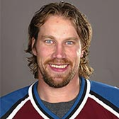
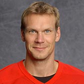

På den här webbsidan kommer ni kunna läsa om de två främsta svenska ishockey spelare enligt mig(Adam Eliasson).
Jag har själv spelat ishockey i 16 år, främst för ishockeyklubben Malmö Redhawks där jag lyckades spela proffetionell junior hockey i 4 år.
De spelare jag rankar högst är Peter Forsberg och Nicklas Lidström.
Många tycker likadant, Peter Forsberg klassas som en av sveriges och NHL:s bästa genom tiderna. 1991 blev Peter draftad in till NHL som är världens bästa hockey liga.
Vald som nummer 6 av Philadelphia Flyers skulle han entligen få göra sin debut. Men det blev ingen debut för Philadelphia utan Peter blev inblandad i en bytesaffär
som gjorde att han kom till Quebec Nordiques 1992 och där med fick sin efterlängtade debut i ligan.
Peter Forsberg har haft en fantastisk karriär där han har lyft dem mest ärofyllda puckalerna och representerat Sverige i många Världsevenemang.
Nedanför är en lista av de mest framgångsrika priserna han är vunnit
Om ni vill läsa mer om Peters statestik kan ni klicka på bilden nedanför
Nicklas Lidström rankas som en av världens bästa backar men även som en av NHL:s bästa kapten genom ligans historia. Nicklas växte upp i Alvesta och som 16 åring flyttade han hemifrån
för att satsa på sin elitkarriär. Nicklas lyckades bli draftad av Detroit Red Wings 1989 men bara som 53:e valet. Många trodde inte på Nicklas i början av hans NHL karriär men det skulle senare motbbevisa alla.
Nicklas är också en av de svenska ishockey spelarna som har lyckats bäst och har samlat på sig många medaljer och puckaler.
Nedanför är en lista av de mest framgångsrika priserna han har vunnit
Om ni vill läsa mer om Nicklas statestik kan ni klicka på bilden nedanför
